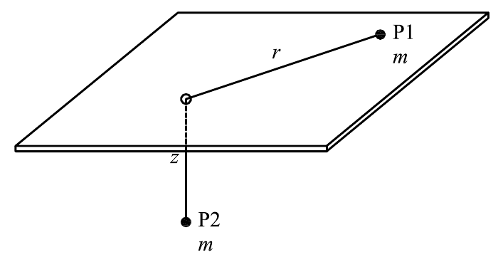

Topic 4: Angular Momentum and Central Forces - Problem Sets
Particle Attracted to the Origin by $F = m\mu/r^\alpha$
Original statement · Problems.pdf, p. 29(Advanced problem.) A point particle $P$ of mass $m$ is attracted by the origin of coordinates $O$ of the inertial reference frame $S_0$ by a force with magnitude
where $r$ is the distance between $O$ and $P$, and $\mu, \alpha$ are known constants.
-
(a)
Show that the angular momentum vector and the mechanical energy of $P$ are conserved quantities of motion, and that the motion of $P$ occurs in a plane.
-
(b)
Using polar coordinates $(r, \theta)$ in the plane of motion, find a second-order differential equation to solve for $u \equiv 1/r$ as a function of $\theta$ (i.e., $u = u(\theta)$).
-
(c)
Find a first integral of this equation and discuss the limits of motion of $u$ as a function of $\mu/h^2$, $\alpha$, and the values of $u$ and $u' \equiv du/d\theta$ at $t = 0$, where $h$ is the magnitude of the angular momentum vector about the origin per unit mass. For $\alpha = 1, 2, 3,$ and $4$, determine under which conditions: (i) the particle escapes to infinity ($u \to 0$); (ii) the particle reaches $r = 0$ ($u \to \infty$); (iii) the particle oscillates between two values of $u$.
Hint: try to solve first the problem with $\alpha = 2$, and then try the other values.
Worked Solution (4-Phase Methodology) [ Click to Expand ]
Constraints, Degrees of Freedom & Coordinates
- System: a particle $P$ of mass $m$ attracted to the fixed point $O$ by $\mathbf{F} = -\dfrac{m\mu}{r^\alpha}\mathbf{e}_r$, where $r = \|\overrightarrow{OP}\|$.
- Hypotheses: $S_0$ is inertial; $\mu \gt 0$ and $\alpha \gt 0$ are constants; no other force acts; $h \ne 0$ unless stated.
- Constraints: none. $P$ is a free particle, so $\text{CDOF} = 3$. Part (a) proves that the motion is planar; that is a consequence of the dynamics, not an imposed constraint. In the plane, $\text{CDOF} = 2$.
- Coordinates: polar coordinates $(r, \theta)$ in the plane of motion. For the orbit equation we also use $u(\theta) = 1/r(\theta)$ and $u' = du/d\theta$; $h$ is the magnitude of the angular momentum per unit mass.
- Special case $h = 0$: the motion is then radial and the Binet formulation does not apply. It is treated at the end of part (c).
- Notation: the official text writes $F = m\alpha/r^\beta$ and asks for $\beta = 1, 2, 3, 4$. Here the strength is $\mu$ and the exponent is $\alpha$.
| Symbol | Meaning | SI unit |
|---|---|---|
| $\mu$ | force strength per unit mass, $F/m = \mu/r^\alpha$ | m$^{\alpha+1}$/s$^2$ |
| $h$ | specific angular momentum | m$^2$/s |
| $u$ | reciprocal radius | m$^{-1}$ |
| $\xi$ | specific mechanical energy | J/kg = m$^2$/s$^2$ |
Reference Frames & Vector Bases
- Inertial frame: $S_0 = \{O; \mathbf{i}, \mathbf{j}, \mathbf{k}\}$ with its origin at the attracting centre.
- Polar basis. Take $\mathbf{k}$ along $\mathbf{H}_O$ (justified in 3.3). The polar basis $\mathcal{B}_1 = \{\mathbf{e}_r, \mathbf{e}_\theta, \mathbf{k}\}$ is the inertial basis $\mathcal{B}_0 = \{\mathbf{i}, \mathbf{j}, \mathbf{k}\}$ rotated by $\theta(t)$ about $\mathbf{k}$:
- Angular velocity and angular acceleration of $\mathcal{B}_1$ with respect to $S_0$: $\boldsymbol{\omega}_{10} = \dot{\theta}\,\mathbf{k}$ and $\boldsymbol{\alpha}_{10} = \ddot{\theta}\,\mathbf{k}$.
- Time derivatives of the unit vectors (Poisson's formula $\dot{\mathbf{e}} = \boldsymbol{\omega}\times\mathbf{e}$):
Derivation
3.1 Kinematics
- The angular momentum per unit mass about $O$ follows from the velocity:
3.2 Forces
- Applied force: the attraction $\mathbf{F} = -\dfrac{m\mu}{r^\alpha}\mathbf{e}_r$. It is central: its line of action always passes through $O$.
- Constraint forces: none. Inertia forces: none, because Newton's second law is written in the inertial frame $S_0$.
For $\alpha \le 1$ the integral from infinity diverges, so the reference radius $r_*$ is arbitrary. For $\alpha = 1$:
- In all cases the force per unit mass is recovered by differentiating, e.g. for $\alpha \gt 1$, $V_0'(r) = -\dfrac{\mu}{\alpha - 1}\cdot\left(-(\alpha - 1)\,r^{-\alpha}\right) = \dfrac{\mu}{r^\alpha}$, and for $\alpha = 1$, $V_0'(r) = \mu/r$.
3.3 Equations of Motion
- Planar motion. From $\mathbf{H}_O = m\,\mathbf{r}\times\mathbf{v}$, both $\mathbf{r}\cdot\mathbf{H}_O \equiv 0$ and $\mathbf{v}\cdot\mathbf{H}_O \equiv 0$. Then $P$ stays in the plane through $O$ perpendicular to $\mathbf{H}_O$, and we orient $\mathbf{k}$ along $\mathbf{H}_O$.
- Newton's second law in the plane. With $\mathbf{a}$ from 3.1 and $\mathbf{F}$ from 3.2, projected on $\mathbf{e}_r$ and $\mathbf{e}_\theta$:
- Check of closure: two unknowns, $r(t)$ and $\theta(t)$, and two independent scalar equations.
- Angular momentum from the transverse equation. Multiplying by $r/m$ and using the product rule:
- Energy from the radial equation. The force is conservative (3.2), so the mechanical energy per unit mass $\xi = \tfrac{1}{2}\left(\dot{r}^2 + r^2\dot{\theta}^2\right) + V_0(r)$ is a first integral. Differentiating with the product and chain rules, and using $V_0'(r) = \mu/r^\alpha$:
3.4 Integration and Answers
(a) Conserved quantities and planar motion
- The angular momentum $\mathbf{H}_O = m\,\mathbf{r}\times\mathbf{v}$ and the mechanical energy $\xi = \tfrac{1}{2}v^2 + V_0(r)$ are conserved, and the motion occurs in the plane through $O$ perpendicular to $\mathbf{H}_O$. All three statements were proved in 3.3.
(b) Binet equation for a power law
- The radial equation $\ddot{r} - r\dot{\theta}^2 = -\mu/r^\alpha = -\mu u^\alpha$ with $r\dot{\theta}^2 = \frac{1}{u}\left(hu^2\right)^2 = h^2u^3$ becomes
(c) First integral and limits of the motion
- Derivative of $W_{\text{eff}}$ (chain rule). With $\dfrac{d}{du}\left(\dfrac{1}{u}\right) = -\dfrac{1}{u^2}$ and $V_0'(r) = \mu/r^\alpha$ evaluated at $r = 1/u$:
- Check. $\dfrac{d}{d\theta}\left[(u')^2 + W_{\text{eff}}\right] = u'\left(2u'' + W_{\text{eff}}'\right) = 0$. Where $u' \ne 0$ this gives $u'' = -\tfrac{1}{2}W_{\text{eff}}'$, which is the Binet equation; at the points where $u' = 0$ the Binet equation holds by continuity.
- Limits of the motion. Because $(u')^2 \ge 0$, motion exists only where $W_{\text{eff}}(u) \le E^*$. The turning points ($u' = 0$) are the roots of $W_{\text{eff}}(u) = E^*$, and a minimum or a maximum of $W_{\text{eff}}$ is a circular orbit. The constant is fixed by the initial data $u_0 = u(0)$ and $u_0' = u'(0)$:
- The three questions are: (i) escape, $u \to 0$; (ii) reaching the origin, $u \to \infty$; (iii) oscillation between two values of $u$.
Case $\alpha = 2$: inverse square (Kepler)
- Binet: $u'' + u = \mu/h^2$. Potential: $V_0 = -\mu u$, so $W_{\text{eff}} = u^2 - \dfrac{2\mu}{h^2}u = \left(u - \dfrac{\mu}{h^2}\right)^2 - \left(\dfrac{\mu}{h^2}\right)^2$, a parabola with minimum $-(\mu/h^2)^2$ at $u = \mu/h^2$. The constant is $E^* = (u_0')^2 + u_0^2 - \dfrac{2\mu}{h^2}u_0$.
- (i) Escape: possible if and only if $E^* \ge W_{\text{eff}}(0) = 0$, i.e. $(u_0')^2 + u_0^2 \ge \dfrac{2\mu}{h^2}u_0$ (parabola or hyperbola). For $E^* \gt 0$ a particle moving inward ($u_0' \gt 0$) is first reflected at the positive root and then escapes.
- (ii) Reaching $r = 0$: impossible for $h \ne 0$, because $W_{\text{eff}} \to +\infty$ as $u \to \infty$.
- (iii) Oscillation: for $-(\mu/h^2)^2 \lt E^* \lt 0$: $u$ oscillates between the two roots (periapsis and apoapsis of an ellipse); $E^* = -(\mu/h^2)^2$ is the circular orbit.
Case $\alpha = 1$: $F \propto 1/r$
- Binet: $u'' + u = \dfrac{\mu}{h^2u}$. With the reference radius $r_*$, $V_0 = \mu\ln(r/r_*) = -\mu\ln(ur_*)$, so $W_{\text{eff}} = u^2 - \dfrac{2\mu}{h^2}\ln(ur_*)$ and $E^* = (u_0')^2 + u_0^2 - \dfrac{2\mu}{h^2}\ln(u_0r_*)$.
- $W_{\text{eff}} \to +\infty$ both as $u \to 0$ (because $-\ln u \to +\infty$) and as $u \to \infty$. Its minimum is at $W_{\text{eff}}' = 2u - \dfrac{2\mu}{h^2u} = 0$, i.e. $u_c = \sqrt{\mu}/h$.
- (i) Escape is impossible for any finite energy. (ii) Reaching $r = 0$ is impossible. (iii) Every orbit with $E^* \gt W_{\text{eff}}(u_c)$ oscillates between two finite turning points; $E^* = W_{\text{eff}}(u_c)$ is the circular orbit $r = h/\sqrt{\mu}$. Since $E^* \ge W_{\text{eff}}(u_c)$ always, every motion with $h \ne 0$ is of type (iii) or circular.
Case $\alpha = 3$: $F \propto 1/r^3$
- $V_0 = -\dfrac{\mu}{2r^2} = -\dfrac{\mu}{2}u^2$. Binet: $u'' + \lambda u = 0$ with $\lambda \equiv 1 - \mu/h^2$. Then $W_{\text{eff}} = \lambda u^2$ and $(u')^2 + \lambda u^2 = E^*$.
- $h^2 \gt \mu$ ($\lambda = \kappa^2 \gt 0$, $\kappa = \sqrt{1 - \mu/h^2}$): $u = A\cos(\kappa\theta + \delta)$ with $A = \sqrt{u_0^2 + (u_0'/\kappa)^2}$. The cosine vanishes at a finite angle, so $u \to 0$ in every case: (i) the particle always escapes; a particle moving inward ($u_0' \gt 0$) is first reflected at the periapsis $u = A$. (ii) never, since $u \le A$. (iii) no oscillation between two positive values.
- $h^2 \lt \mu$ ($\lambda = -\kappa^2 \lt 0$, $\kappa = \sqrt{\mu/h^2 - 1}$): $u = C_1e^{\kappa\theta} + C_2e^{-\kappa\theta}$ with $C_1 = \tfrac{1}{2}(u_0 + u_0'/\kappa)$, $C_2 = \tfrac{1}{2}(u_0 - u_0'/\kappa)$. If $C_1 \gt 0$ (i.e. $u_0' \gt -\kappa u_0$), $u \to \infty$: (ii) the particle reaches the origin. If $C_1 \lt 0$ ($u_0' \lt -\kappa u_0$), $u$ reaches $0$ at a finite angle: (i) escape. If $C_1 = 0$, $u = u_0e^{-\kappa\theta} \to 0$ only asymptotically (spiral $r = r_0e^{\kappa\theta}$), a limiting case of escape. (iii) no oscillation.
- $h^2 = \mu$ ($\lambda = 0$): $u'' = 0 \Rightarrow u = u_0 + u_0'\theta$ (reciprocal spiral). $u_0' \gt 0$: reaches the origin; $u_0' \lt 0$: escapes at $\theta = u_0/|u_0'|$; $u_0' = 0$: circle $r = 1/u_0$.
Case $\alpha = 4$: $F \propto 1/r^4$
- Binet: $u'' + u = \dfrac{\mu}{h^2}u^2$. $V_0 = -\dfrac{\mu}{3}u^3$, so $W_{\text{eff}} = u^2 - \dfrac{2\mu}{3h^2}u^3 = u^2\left(1 - \dfrac{2\mu}{3h^2}u\right)$ and $E^* = (u_0')^2 + u_0^2 - \dfrac{2\mu}{3h^2}u_0^3$.
- $W_{\text{eff}}'(u) = 2u - \dfrac{2\mu}{h^2}u^2 = 2u\left(1 - \dfrac{\mu}{h^2}u\right)$: stationary points $u = 0$ (minimum, $W = 0$) and $u_b = h^2/\mu$ (maximum, barrier $W_{\max} = u_b^2 - \dfrac{2\mu}{3h^2}u_b^3 = \dfrac{h^4}{3\mu^2}$). For $u \gt u_b$, $W_{\text{eff}}$ decreases without bound and crosses zero at $u_z = 3h^2/(2\mu) \gt u_b$.
- There is no interior minimum, so the allowed set $\{W_{\text{eff}} \le E^*\}$ either contains $u = 0$ or extends to $u \to \infty$. Because $\dot{\theta} = hu^2 \gt 0$, $u'$ has the sign of $\dot{u}$.
- Allowed regions by energy (with $u_0 \gt 0$):
- $E^* \lt 0$: only $u \ge u_2$ with $u_2 \gt u_z$ is allowed.
- $E^* = 0$: $u = 0$ is a double root, so the allowed set is $\{0\} \cup [u_z, \infty)$; a particle at finite $r$ has $u_0 \ge u_z$.
- $0 \lt E^* \lt W_{\max}$: two roots $u_1 \in (0, u_b)$ and $u_2 \gt u_b$; allowed $u \le u_1$ or $u \ge u_2$.
- $E^* = W_{\max}$: $u_b$ is a stationary point of $W_{\text{eff}}$; the unstable circular orbit $u = u_b$ and the motions that approach it asymptotically.
- $E^* \gt W_{\max}$: no turning points.
- Motion in each region. For $0 \lt E^* \lt W_{\max}$ and $u_0 \le u_1$: if $u_0' \gt 0$ the particle is reflected at $u_1$, and in any case it escapes. For $u_0 \ge u_2$: if $u_0' \lt 0$ it is reflected at $u_2$, and in any case it falls to the origin. For $E^* = W_{\max}$: with $u_0 \lt u_b$, $u_0' \lt 0$ escapes and $u_0' \gt 0$ approaches $u_b$ asymptotically; with $u_0 \gt u_b$, $u_0' \gt 0$ falls to the origin and $u_0' \lt 0$ approaches $u_b$ asymptotically. For $E^* \gt W_{\max}$, $u_0' \lt 0$ escapes and $u_0' \gt 0$ falls to the origin.
- (i) escape: $0 \lt E^* \lt W_{\max}$ with $u_0 \lt u_b$; or $E^* = W_{\max}$ with $u_0 \lt u_b$ and $u_0' \lt 0$; or $E^* \gt W_{\max}$ with $u_0' \lt 0$.
- (ii) reaching $r = 0$: $E^* \le 0$ (then $u_0 \ge u_z$); or $0 \lt E^* \lt W_{\max}$ with $u_0 \gt u_b$; or $E^* = W_{\max}$ with $u_0 \gt u_b$ and $u_0' \gt 0$; or $E^* \gt W_{\max}$ with $u_0' \gt 0$.
- (iii) bounded oscillation between two values of $u$: does not occur; it would need an interior minimum of $W_{\text{eff}}$, and the only bounded motion is the unstable circle $u = u_b$.
Special case $h = 0$ (radial motion)
- (ii) A particle with $\dot{r}_0 \lt 0$ reaches $r = 0$ for every $\alpha$, since the acceleration is always inward. (i) Escape requires $\dot{r}_0 \gt 0$ and $\xi \ge \lim_{r\to\infty}V_0 = 0$, which exists only for $\alpha \gt 1$; for $\alpha \le 1$, $V_0 \to +\infty$ and the particle always turns back. (iii) Without angular momentum, a particle that turns back falls to the origin, so there is no oscillation between two values.
Interpretation & Checks
- Dimensional check: $[F/m] = \text{m/s}^2 = [\mu]/\text{m}^\alpha$ gives $[\mu] = \text{m}^{\alpha+1}/\text{s}^2$. With $[h^2] = \text{m}^4/\text{s}^2$ and $[u] = \text{m}^{-1}$, $\dfrac{\mu}{h^2}u^{\alpha - 2}$ has units $\text{m}^{\alpha - 3}\,\text{m}^{-(\alpha - 2)} = \text{m}^{-1}$, the same as $u$ and $u''$ ($\theta$ is dimensionless).
- Stability of circular orbits (consequence of the first integral): for general $\alpha$, $W_{\text{eff}}'(u_c) = 0$ gives $u_c^{\alpha - 3} = h^2/\mu$ and $W_{\text{eff}}''(u_c) = 2 - 2(\alpha - 2)\dfrac{\mu}{h^2}u_c^{\alpha - 3} = 2(3 - \alpha)$, so the circular orbit is a minimum (stable) for $\alpha \lt 3$ and a maximum (unstable) for $\alpha \gt 3$, in agreement with the cases above ($\alpha = 4$: barrier at $u_b = h^2/\mu$).
- Check against the official key:
Problems.pdfhas no entry for Problem 42 in its solution keys, so the result is verified by independent derivation. A symbolic check with sympy confirms the substitution $\dot{r} = -hu'$, $\ddot{r} = -h^2u^2u''$, the Binet equation, the first integral $\frac{d}{d\theta}\left[(u')^2 + W_{\text{eff}}\right] = 0$, the barrier $W_{\max} = h^4/(3\mu^2)$ and $W_{\text{eff}}'' = 2(3 - \alpha)$. - Numerical check (Python, DOP853 with relative tolerance $10^{-12}$ on $u'' = -u + (\mu/h^2)u^{\alpha-2}$, units with $\mu = h = 1$ unless stated). Blow-up angles are given for the cut-off $u = 10^6$; they change by less than $0.003$ rad when the cut-off is $10^9$.
| Case | Initial data $(u_0, u_0')$ | Predicted | Integration result |
|---|---|---|---|
| $\alpha = 2$ | $(1.5, 0)$ | bounded, $0.5$ to $1.5$ | $u \in [0.5000, 1.5000]$ over $60$ rad |
| $\alpha = 2$ | $(0.5, -0.9)$, $E^* \gt 0$ | escape | $u = 0$ at $\theta = 0.823$ |
| $\alpha = 4$ | $(0.5, 0)$, $E^* = 1/6 \lt 1/3$ | reflected, then escape | $u = 0$ at $\theta = 2.078$ |
| $\alpha = 4$ | $(1.2, 0)$, $E^* = 0.288 \lt 1/3$ | collapse | $u \to \infty$ at $\theta = 4.058$ |
| $\alpha = 4$ | $(0.5, 0.9)$, $E^* = 0.977 \gt 1/3$ | collapse | $u \to \infty$ at $\theta = 3.604$ |
| $\alpha = 4$ | $(0.5, -0.9)$, $E^* = 0.977 \gt 1/3$ | escape | $u = 0$ at $\theta = 0.524$ |
| $\alpha = 4$ | $(1, 0)$, $E^* = W_{\max}$ | unstable circular orbit | $u = 1$ for $20$ rad |
| $\alpha = 4$ | $(1.5, 0)$, $E^* = 0$, $u_0 = u_z$ | collapse | $u \to \infty$ at $\theta = 3.139$ |
| $\alpha = 4$ | $(0.5, -0.408)$, $E^* = W_{\max}$ | escape | $u = 0$ at $\theta = 0.975$ |
| $\alpha = 4$ | $(0.5, +0.408)$, $E^* = W_{\max}$ | tends to $u_b = 1$ asymptotically | follows $u \to 1$ until round-off, amplified by $e^{\theta}$, takes it off the separatrix at $\theta \approx 34$ |
| $\alpha = 3$, $\mu/h^2 = 2$ | $(1, 0.2)$, $C_1 \gt 0$ | collapse | $u = \cosh\theta + 0.2\sinh\theta$ grows without bound with $\theta$ and no zero appears |
| $\alpha = 3$, $\mu/h^2 = 2$ | $(1, -1.5)$, $C_1 \lt 0$ | escape | $u = 0$ at $\theta = 0.805$ |
| $\alpha = 3$, $\mu/h^2 = 1/2$ | $(1, 0)$ | escape | $u = 0$ at $\theta = 2.221$, equal to $\dfrac{\pi/2}{\sqrt{1/2}}$ |
| $\alpha = 3$, $\mu = h^2$ | $(1, -0.1)$ | escape at $\theta = 10$ | $u = 1 - 0.1\theta$, zero at $\theta = 10$ |
| $\alpha = 1$ | $(0.5, 0.3)$ | bounded | $u \in [0.471, 1.653]$ over $100$ rad |
We consider a smooth horizontal plane with a small hole in it. One of the ends of a massless cord of length $2a$ is passed through the hole and then, two point particles, $P_1$ and $P_2$, each with the same mass $m$, are attached to the ends of the cord. Therefore, $P_1$ is constrained to move on the plane and $P_2$ moves along a vertical line below the hole.
Initially, half of the cord lies under the plane and half of the cord is on the plane. At that instant, $P_1$ is pushed with a speed $v_0$ perpendicular to the cord, counterclockwise as seen from above. Assume that the cord is always in tension.

-
(a)
What is the value of $v_0$ if $P_1$ describes a circumference?
-
(b)
In that case, what is the value of the tension in the cord?
-
(c)
If $v_0 = \sqrt{8ag/3}$, reduce the problem to integrals (i.e., quadratures).
-
(d)
Show that for this value of $v_0$, $P_1$ oscillates between $r = a$ and $r = 2a$.
-
(e)
Apply Newton's law to $P_2$ and show that the tension of the cord is $T = mg\left(\dfrac{1}{2} + \dfrac{4a^3}{3r^3}\right)$.
-
(f)
Write down the new equations of motion if the plane on which $P_1$ moves is rough, with a friction coefficient $\mu$.
Hint: the roots of the polynomial $-3x^3 + 7x^2 - 4$ are $x_1 = 1$, $x_2 = 2$ and $x_3 = -2/3$.
Worked Solution (4-Phase Methodology) [ Click to Expand ]
Constraints, Degrees of Freedom & Coordinates
- System: $P_1$ on a smooth horizontal plane at polar position $(r, \theta)$ and $P_2$ hanging on the vertical through the hole $O$, joined by an inextensible massless cord of length $2a$ that passes through $O$.
- Hypotheses: inertial frame $S_0$ with $O$ at the hole; smooth hole and plane for parts (a) to (e); the cord stays taut ($T \gt 0$, checked in (e)); no drag.
- Constraints (holonomic and scleronomic; the cord is unilateral in principle, so $T \ge 0$ is verified afterwards):
- $P_1$ on the plane: $z_1 = 0$.
- $P_2$ on the vertical through the hole: $x_2 = y_2 = 0$.
- Cord of constant length: $r + \ell_2 = 2a$, where $\ell_2$ is the hanging length, so $z_2 = -\ell_2 = r - 2a$ ($Oz$ pointing up).
- Geometric feasibility: $\ell_2 \ge 0$, i.e. $r \le 2a$ ($P_2$ cannot go above the hole). This is a unilateral limit that the solution must respect (see Phase 4).
- Degrees of freedom: two particles have $6$ coordinates and there are $4$ independent constraints, so $\text{CDOF} = 6 - 4 = 2$.
- Coordinates: $(r, \theta)$, polar coordinates of $P_1$ on the plane.
- Initial state: $r(0) = a$, $\dot{r}(0) = 0$, $r(0)\dot{\theta}(0) = v_0$, hence $\dot{\theta}(0) = v_0/a$ and $\dot{z}_2(0) = 0$.
| Symbol | Meaning | SI unit |
|---|---|---|
| $m$ | mass of each particle | kg |
| $a$ | half of the cord length | m |
| $v_0$ | initial speed of $P_1$ | m/s |
| $g$ | gravitational acceleration | m/s$^2$ |
| $\mu$ | friction coefficient (part f) | 1 |
Reference Frames & Vector Bases
- Inertial frame: $S_0 = \{O; \mathbf{i}, \mathbf{j}, \mathbf{k}\}$, horizontal plane $z = 0$, $\mathbf{k}$ up.
- Polar basis of $P_1$. $\mathcal{B}_1 = \{\mathbf{e}_r, \mathbf{e}_\theta, \mathbf{k}\}$ is the inertial basis rotated by $\theta(t)$ about $\mathbf{k}$:
- $\boldsymbol{\omega}_{10} = \dot{\theta}\,\mathbf{k}$, so by Poisson $\dot{\mathbf{e}}_r = \dot{\theta}\,\mathbf{e}_\theta$ and $\dot{\mathbf{e}}_\theta = -\dot{\theta}\,\mathbf{e}_r$. $P_2$ moves along $\mathbf{k}$, so it needs no extra basis.
Derivation
3.1 Kinematics
3.2 Forces
- On $P_1$: its weight $-mg\,\mathbf{k}$; the normal reaction of the smooth plane $N_1\,\mathbf{k}$ (unknown magnitude, vertical because the plane is smooth); and the tension of the cord $-T\,\mathbf{e}_r$ (the cord is horizontal on the plane and pulls toward the hole).
- On $P_2$: its weight $-mg\,\mathbf{k}$, the tension $+T\,\mathbf{k}$ (same cord, massless, smooth hole) and the horizontal reaction of the vertical line $R_{2x}\,\mathbf{i} + R_{2y}\,\mathbf{j}$ that keeps $x_2 = y_2 = 0$ (unknown, to be determined).
- Inertia forces: none, because the frame $S_0$ is inertial.
- Unknowns: $r(t)$, $\theta(t)$, $T(t)$, $N_1(t)$, $R_{2x}(t)$ and $R_{2y}(t)$.
3.3 Equations of Motion
- Check of closure: six unknowns ($r$, $\theta$, $T$, $N_1$, $R_{2x}$, $R_{2y}$) and six equations. The reactions are decoupled: $N_1 = mg$ and $R_{2x} = R_{2y} = 0$, because $\mathbf{a}_2$ is parallel to $\mathbf{k}$. Only $r$, $\theta$ and $T$ remain, with three equations.
- Dynamical decoupling. Adding the $\mathbf{e}_r$ equation of $P_1$ and the equation of $P_2$ eliminates $T$:
- Angular momentum. Multiplying the transverse equation by $r/m$ gives $\frac{d}{dt}\left(r^2\dot{\theta}\right) = r\left(r\ddot{\theta} + 2\dot{r}\dot{\theta}\right) = 0$, so $h = r^2\dot{\theta}$ is constant.
- Energy. The tension does work $-T\dot{r}$ on $P_1$ and $+T\dot{r}$ on $P_2$, which cancel (inextensible cord); the plane does no work. With the kinetic energy $K = \tfrac{1}{2}m\left(\dot{r}^2 + r^2\dot{\theta}^2\right) + \tfrac{1}{2}m\dot{r}^2$ and $V = mgz_2 = mg(r - 2a)$, the energy is conserved. Replacing $r^2\dot{\theta}^2 = h^2/r^2$:
3.4 Integration and Answers
(a) Circular motion, $r \equiv a$
(b) Tension in the circular case
(c) Quadratures for $v_0 = \sqrt{8ag/3}$
- Equating $E = E(0)$, dividing by $m$ and isolating $\dot{r}^2$:
- Separating variables, with $P(r) \equiv -3r^3 + 7ar^2 - 4a^3$. The sign of $\dot{r}$ is $+$ in the first half-cycle, because $P_1$ starts at the inner turning point $r = a$ with $\ddot{r}(0) = -\tfrac{g}{2} + \tfrac{h^2}{2a^3} = \tfrac{5g}{6} \gt 0$ (from the radial equation of 3.3 with $\dot{\theta} = h/r^2$). Applying Barrow's rule from $r(0) = a$ on the left side and from $0$ to $t$ on the right side:
The integrand is improper at $r' = a$ (the radicand vanishes there) but integrable, since $P(r')$ has a simple root at $a$. After the outer turning point $r = 2a$, reached at $t = \tau_r/2$, the sign of $\dot{r}$ is $-$ and the quadrature restarts from $2a$:
and the motion repeats with the radial period $\tau_r$ (see Phase 4).
- Quadrature for the angle. With $\dot{\theta} = h/r^2$ and the same separation of variables, $d\theta = \dfrac{h}{r^2\dot{r}}\,dr$, and using $h/\sqrt{g/3} = \sqrt{8a^3}$. In the first half-cycle ($\theta(0) = \theta_0$) and in the second one:
or, directly in time, $\theta(t) = \theta_0 + \displaystyle\int_0^t\frac{h}{r(t')^2}\,dt'$, which is valid for all $t$ because $\dot{\theta} = h/r^2 \gt 0$.
(d) Oscillation between $r = a$ and $r = 2a$
- Check of the roots: $x = 1$: $-3 + 7 - 4 = 0$; $x = 2$: $-24 + 28 - 4 = 0$; $x = -2/3$: $\frac{8}{9} + \frac{28}{9} - 4 = 0$. Since $r \gt 0$, $3x + 2 \gt 0$ and $P \ge 0$ requires $(x - 1)(x - 2) \le 0$:
- The turning points ($\dot{r} = 0$) are $r_{\min} = a$ and $r_{\max} = 2a$. Both are simple roots of $P$, and the radial acceleration points back into the allowed interval at each one: $\ddot{r}(a) = \tfrac{5g}{6} \gt 0$ and $\ddot{r}(2a) = -\tfrac{g}{2} + \tfrac{h^2}{16a^3} = -\tfrac{g}{3} \lt 0$ (from $\ddot{r} = -\tfrac{g}{2} + \tfrac{h^2}{2r^3}$, derived in (e)). So $r$ reverses in finite time at both ends and the motion oscillates between them.
- Feasibility: $r_{\max} = 2a$ is exactly the limit $\ell_2 = 2a - r \ge 0$ of Phase 1; at that instant $P_2$ reaches the hole with zero velocity.
(e) Tension of the cord
- Check by differentiating the energy integral of (c) (chain rule, $\frac{d}{dt}r^{-2} = -2r^{-3}\dot{r}$): $2\dot{r}\ddot{r} = \left(-g + \dfrac{8a^3g}{3r^3}\right)\dot{r}$, which gives the same $\ddot{r}$ wherever $\dot{r} \ne 0$.
- $T \gt 0$ for all $r \in [a, 2a]$, so the cord stays taut.
(f) Rough plane
- Adding the $\mathbf{e}_r$ equation and the $P_2$ equation eliminates $T$; multiplying the $\mathbf{e}_\theta$ equation by $r$ gives the evolution of $h$:
- Angular momentum and energy are no longer conserved (friction dissipates energy), so the problem cannot be reduced to the quadratures of (c).
Interpretation & Checks
- Tension at the turning points: $T(a) = mg\left(\tfrac{1}{2} + \tfrac{4}{3}\right) = \tfrac{11}{6}mg$ and $T(2a) = mg\left(\tfrac{1}{2} + \tfrac{4}{24}\right) = \tfrac{2}{3}mg$, both positive.
- Consistency with (a): for $v_0^2 = ag$, $h^2 = a^3g$ and $\ddot{r}(a) = -\tfrac{g}{2} + \tfrac{h^2}{2a^3} = 0$, so $r = a$ is an equilibrium of the radial equation, as expected for the circular case.
- Radial period (consequence of (c) and (d)): with $x = r/a$ and $x = \tfrac{3}{2} - \tfrac{1}{2}\cos s$, $(x - 1)(2 - x) = \tfrac{1}{4}\sin^2 s$ and $dx = \tfrac{1}{2}\sin s\,ds$, so $\tau_r = 2\sqrt{\dfrac{3a}{g}}\displaystyle\int_0^\pi\dfrac{x(s)\,ds}{\sqrt{3x(s) + 2}} \approx 6.342\sqrt{\dfrac{a}{g}}$.
- Dimensions: $[T] = [m][g] = \text{N}$ and $[v_0] = \sqrt{[a][g]} = \text{m/s}$.
- Feasibility: the outer turning point $r_{\max} = 2a$ puts $P_2$ at the hole with zero velocity ($\ell_2 = 0$), the limit of the constraint $r \le 2a$. The tension there, $T(2a) = \tfrac{2}{3}mg \gt 0$, shows that the cord is still taut, so the motion is admissible for the whole cycle.
- Check against the official key:
Problems.pdfhas no entry for Problem 43 in its solution keys (the tension in (e) is given in the statement and is derived above). All results are therefore verified by independent derivation and by numerical integration. - Quadratures (Python, DOP853 on the equations of 3.3 with $a = g = 1$): from $r = a$ to $r = 1.5a$ the integral for $t$ gives $1.361538\sqrt{a/g}$ and the integral for $\theta$ gives $1.635065$ rad, both equal to the values of the direct integration to $10^{-10}$.
- Symbolic check (sympy): $\dot{r}^2 = \dfrac{g\,(2a - r)(r - a)(2a + 3r)}{3r^2}$ with roots $r = a$ and $r = 2a$; the tension $m(g + \ddot{r})$ equals $mg\left(\tfrac{1}{2} + \tfrac{4a^3}{3r^3}\right)$ identically.
- Numerical check (Python, DOP853 on $\ddot{r} = -g/2 + 4a^3g/(3r^3)$ with $a = g = m = 1$, $r(0) = 1$, $\dot{r}(0) = 0$): minimum and maximum radius $1.0000$ and $1.9991$ over the sampled steps (the turning point $2.0000$ is reached between samples), period $6.34243$ (the quadrature gives $6.34243$), and the energy residual stays below $5\times 10^{-12}$.
The little Prince is on his spherical asteroid, which has radius $R$ and mass $M$, and does not rotate. While he sits at the equator, he throws a baobab seed with an initial velocity of magnitude $v_0$ and angle $\gamma = 60^\circ$ with respect to the local horizontal. Knowing that it reaches an apocenter of $r = 3R$ before falling back, determine $v_0$ as a function of the parameters of the problem and the universal gravitational constant $G$.
Worked Solution (4-Phase Methodology) [ Click to Expand ]
Constraints, Degrees of Freedom & Coordinates
- System: a seed of mass $m \ll M$ launched from the surface ($r_0 = R$) with speed $v_0$ at $\gamma = 60^\circ$ above the local horizontal; it reaches the apocenter $r_a = 3R$.
- Hypotheses: spherically symmetric, non-rotating asteroid, so the gravitational force is central and conservative with $\mu = GM$; vacuum (no drag); inertial frame $S_0$ centred on the asteroid.
- Constraints: none (the seed is a free particle once it leaves the surface), so $\text{CDOF} = 3$. The central force makes the motion planar, so $\text{CDOF} = 2$ with the coordinates $(r, \theta)$ in the orbital plane.
- Initial state: $r = R$, radial component $v_{r0} = v_0\sin\gamma = \tfrac{\sqrt{3}}{2}v_0$ and transverse component $v_{\theta 0} = v_0\cos\gamma = \tfrac{1}{2}v_0$. At the apocenter $\dot{r} = 0$.
| Symbol | Meaning | SI unit |
|---|---|---|
| $M$, $R$ | mass and radius of the asteroid | kg, m |
| $G$ | universal gravitational constant, $6.6743\times 10^{-11}$ | m$^3$/(kg s$^2$) |
| $\mu = GM$ | gravitational parameter | m$^3$/s$^2$ |
| $\gamma$ | launch angle above the local horizontal (given: $60^\circ$) | rad |
| $r_a$ | apocenter radius (given: $3R$) | m |
| $v_0$ | launch speed (unknown) | m/s |
Reference Frames & Vector Bases
- Inertial frame: $S_0 = \{O; \mathbf{i}, \mathbf{j}, \mathbf{k}\}$ with $O$ at the centre of the asteroid.
- Polar basis in the orbital plane. $\mathcal{B}_1 = \{\mathbf{e}_r, \mathbf{e}_\theta, \mathbf{k}\}$ is the inertial basis rotated by the true anomaly $\theta$ about $\mathbf{k}$ (along $\mathbf{H}_O$):
- $\boldsymbol{\omega}_{10} = \dot{\theta}\,\mathbf{k}$, so by Poisson $\dot{\mathbf{e}}_r = \dot{\theta}\,\mathbf{e}_\theta$ and $\dot{\mathbf{e}}_\theta = -\dot{\theta}\,\mathbf{e}_r$.
Derivation
3.1 Kinematics
- At launch, $\dot{r} = v_0\sin\gamma$ and $r\dot{\theta} = v_0\cos\gamma$. At the apocenter $\dot{r} = 0$, so the velocity is purely transverse: $v_a = r_a\dot{\theta}_a$.
3.2 Forces
- Applied force: the gravitation of the asteroid, $\mathbf{F} = -\dfrac{GMm}{r^2}\mathbf{e}_r$. It is central and conservative.
- Constraint and inertia forces: none (free particle, inertial frame).
3.3 Equations of Motion
- Angular momentum. The transverse equation times $r/m$ is $\frac{d}{dt}\left(r^2\dot{\theta}\right) = 0$, so $h = r^2\dot{\theta}$ is constant (the force is central).
- Energy. The force is conservative, so $\xi = \tfrac{1}{2}v^2 - GM/r$ is constant. Both laws hold for the same particle between launch and apocenter.
- Unknowns and equations: $v_0$ and $v_a$ are unknown, and there are two equations ($h$ and $\xi$ conservation), so the problem is closed.
3.4 Integration and Answers
Conservation of specific angular momentum
Conservation of specific energy
Solving for $v_0$
Interpretation & Checks
- Bound orbit: the escape speed at the surface is $v_e = \sqrt{2GM/R}$, i.e. $v_e^2 = \tfrac{70}{35}GM/R$. Since $\tfrac{48}{35} \lt 2$, $v_0 \lt v_e$ and the orbit is an ellipse: the seed falls back.
- Orbital parameters: $h^2 = \tfrac{1}{4}R^2v_0^2 = \tfrac{12}{35}GMR$ and the semi-latus rectum $p = h^2/\mu = \tfrac{12}{35}R$. From $r_a = p/(1 - e) = 3R$: $1 - e = \tfrac{4}{35}$ and $e = \tfrac{31}{35} \approx 0.8857$. The periapsis of the full conic is $r_p = p/(1 + e) = \tfrac{2}{11}R \lt R$, inside the asteroid.
- Physical arc. On the orbit $r = p/(1 + e\cos\theta)$ the seed leaves the surface where $1 + e\cos\theta_0 = p/R$, i.e. $\cos\theta_0 = -\tfrac{23}{31}$ with $\sin\theta_0 \gt 0$ (the seed is moving away from the centre, $\dot{r}_0 \gt 0$), so $\theta_0 \approx 137.9^\circ$. It passes the apocenter at $\theta = \pi$ and lands where $r = R$ again, at $\theta = 2\pi - \theta_0 \approx 222.1^\circ$. The part of the conic that contains the periapsis ($\theta = 0$) is inside the asteroid and is not travelled: the seed describes about $84^\circ$ of orbit and falls back.
- Independent check with the Binet solution. The orbit equation of Problem 42 for $\alpha = 2$ is $u'' + u = \mu/h^2$, with the first integral $\left(u - \mu/h^2\right)^2 + (u')^2 = \left(\mu e/h^2\right)^2$ that defines the eccentricity. The launch data give $u_0 = 1/R$ and $u_0' = -\dot{r}_0/h = -\dfrac{(\sqrt{3}/2)v_0}{(1/2)Rv_0} = -\dfrac{\sqrt{3}}{R}$, so
- This eccentricity, obtained from the launch conditions alone, reproduces the prescribed apocenter: $r_a = \dfrac{p}{1 - e} = \dfrac{12R/35}{4/35} = 3R$. The value of $v_0$ found from energy and angular momentum is therefore consistent with a second, independent formulation.
- Limiting cases of the general result. Repeating the algebra with $r_a$ and $\gamma$ as symbols ($h = Rv_0\cos\gamma$, $v_a = (R/r_a)v_0\cos\gamma$):
For $r_a = 3R$ and $\gamma = 60^\circ$ the denominator is $1 - \tfrac{1}{9}\cdot\tfrac{1}{4} = \tfrac{35}{36}$ and $v_0^2 = \tfrac{4}{3}\cdot\tfrac{36}{35}\,\mu/R = \tfrac{48}{35}\,\mu/R$. As $r_a \to \infty$, $v_0^2 \to 2\mu/R$, the escape speed. For $\gamma = 90^\circ$ (vertical launch) $v_0^2 = 2\mu\left(1/R - 1/r_a\right)$, the energy balance of a radial flight. For $\gamma = 0$ and $r_a \to R$ the quotient tends to $\mu/R$, the circular speed.
- Dimensions: $[v_0] = \sqrt{[G][M]/[R]} = \sqrt{\dfrac{\text{m}^3}{\text{kg}\,\text{s}^2}\cdot\dfrac{\text{kg}}{\text{m}}} = \text{m/s}$.
- Check against the official key:
Problems.pdfhas no entry for Problem 44 in its solution keys, so the result is verified by independent derivation: sympy solves the energy equation and returns $v_0^2 = \tfrac{48}{35}GM/R$, and the eccentricity obtained from the launch data reproduces the prescribed apocenter $r_a = 3R$. - Numerical check (Python, DOP853 integration of $\ddot{\mathbf{r}} = -\mu\mathbf{r}/r^3$ with $\mu = R = 1$ and $v_0 = \sqrt{48/35}$, $\gamma = 60^\circ$): the maximum radius reached is $2.99998R$ (sampling resolution of the output) and the speed there is $0.16668\,v_0$, in agreement with $r_a = 3R$ and $v_a = v_0/6$.